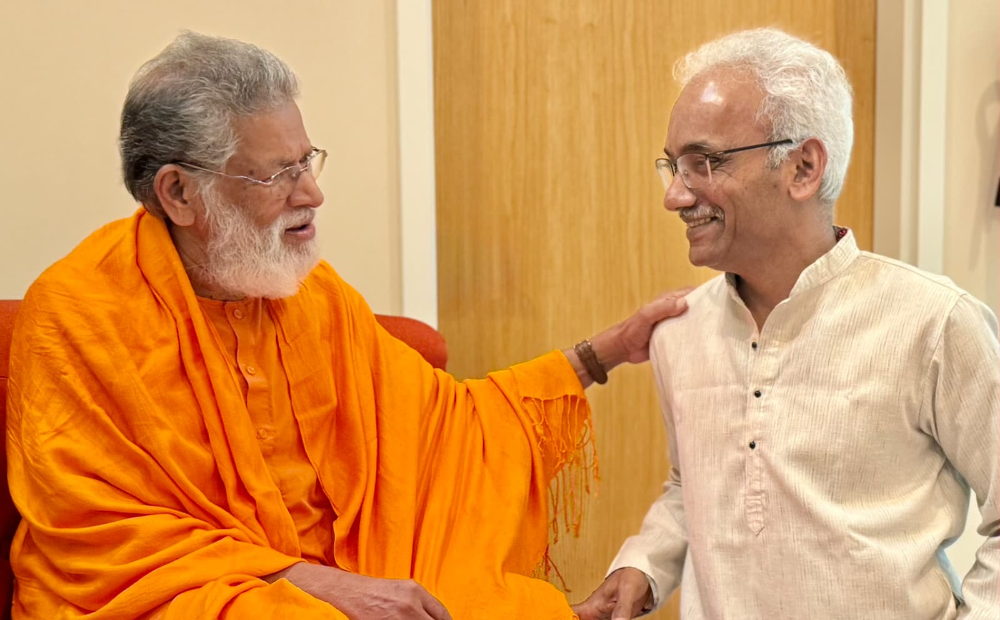

Chairman, Sambodh Foundation India & The Sambodh Society Inc. USA

Swami Bodhananda Saraswati with Dr. Anupkumar Shetty
Hinduism Explained — A Beginner's Guide by late Anup Kumar Shetty MD is an easy-to-read primer of Hindu Dharma, one of the oldest living traditions of the world. Dharma is a complex concept that involves varied beliefs, values, and practices of a mass of people held together by a thread of commonality of purpose and motivation reflected in the stories they tell and dreams they share with each other. This book explores some of those complexities and unpacks the inner meaning of Dharma, which is generally understood as a sustainable way of community living.
The author emphasizes that Dharma is a way of thinking, feeling, and doing that promotes collective well-being.
There are many misconceptions about Hindu Dharma, especially in the West and even among educated Hindu youth: that Dharma ideals are archaic, that it supports rigid caste hierarchies, that it negates the existence of an objective world and is indifferent to worldly activities and material accomplishments. That the highest ideal of Dharma, which is moksha, is extinction of self and agency. That it is indifferent to women's rights and their leadership aspirations. That Hindus are idol worshippers. That they believe in many gods and a plurality of divinities. That they are confused about the right path to God and hence offer a mishmash of paths that bewilders and distracts a serious seeker of truth. The Hindu ideal of radical oneness (Advaita) and universal love (ahimsa) is impractical in the daily life of strife, struggle, and choice making. That the idea that humans are immortal privileges humans compared to other life forms. The contention that human souls are immortal is against our common experience of finitude and mortality, etc., etc.
Dr. Anup takes up all those questions head on and addresses all such misconceptions about Hindu Dharma with a rare conviction and offers simple and credible answers, quoting Hindu scriptures and modern scientific discoveries. The author maintains that the true spirit of Hindu Dharma is pluralistic, inclusive, and progressive. That many Gods are only one God speaking through many masks, manifesting through many mediums, experiencing Himself in manifold ways. Life is immortal, but its expressions flower and fade. Many paths to God take into account the differences in individual temperament and tastes, so that all can start their journey from wherever they are. This is the Hindu ideal of spiritual democracy that circumvents institutional hegemony.
The spiritual practitioner in Dr. Anup doesn't see any contradiction between the divergent philosophical positions held by different Hindu masters. He sees Sankara (Advaita), Ramanuja (Visishtadvaita), and Madhva (Dvaita) addressing different levels of seekers and highlighting different aspects of the devotee-Deity relationship. They are all parts of a grand ensemble.
The author devotes considerable time to explaining the practical aspects of the four yogas — karma, bhakti, raja, and jnana — and their complementarity in spiritual life. He doesn't hesitate to express his discomfort with predatory proselytizing religions, whose champions wait for weak moments in human life like disease, death, or deprivation.
The author's analysis of the Gayatri Mantra, AUM, and the four Mahavakyas (wisdom statements) is deep and profound.
Dr. Anup, who has gone through serious trials and severe physical pain in life, is a firm believer in the power of prayers, both individual and collective. He is basically a no-holds-barred devotee — helpless and childlike.
This book anchors its wisdom in the Bhagavad Gita and offers a bird's-eye view of this immortal text, picking nuggets from this vast treasure chest of Hindu wisdom.
I wholeheartedly recommend this book for the beginner as an entry point to the vast literature on Hindu Dharma, and also for experts to refresh their scholarship in the context of the ever-changing knowledge landscape.
A must-read for all spiritual seekers, regardless of their respective religious persuasions.
As I was completing this note, I got a call from Dr. Raju, Anup's close friend, that Dr. Anup had breathed his last after a prolonged battle with cancer.
I was stunned, though it was expected.
My salutations to this brave warrior of Truth, who loved God and all God's children.
Swami Bodhananda Saraswati
Chairman, Sambodh Foundation India & The Sambodh Society Inc. USA